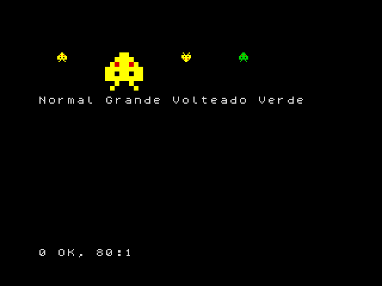
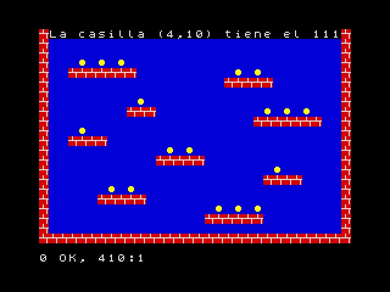

12. Sprites y mapas de tiles
En este capítulo aprenderás a crear sprites (dibujitos que se mueven
por encima del fondo) con GRAB y a dibujarlos con SPRITE, a animar sin
parpadeos usando las dos páginas de la pantalla, a detectar choques con
HIT, y a construir niveles con tiles (las piezas del mosaico) y
mapas: TILE, MAP DIM, MAP POKE, MAP y CELL.
Estas órdenes son los gráficos para juegos de ZX-V. Son rápidas: un bucle en BASIC puede dibujar unos cientos de sprites pequeños en cada frame.
Como BOX en el capítulo 9, cuentan las coordenadas en píxeles desde la
esquina de arriba a la izquierda, con la y creciendo hacia abajo, y
usan los números de color del 0 al 15.
Un sprite a partir de una cadena
La forma más fácil de crear un sprite es dibujarlo con caracteres. Cada
carácter es un píxel: una cifra del 0 al 9 o una letra de la a a la f
es un color (a es el 10, b el 11... f el 15), y cualquier otro
carácter, como ., es transparente: deja ver el fondo.
10 BORDER 0: PAPER 0: INK 7: CLS
20 LET s$="...ee..."+"..eeee.."+".e2ee2e."+"eeeeeeee"+"ee.ee.ee"+"eeeeeeee"+"..e..e.."+".e....e."
30 GRAB 0,8,s$
40 SPRITE 0,16,20
50 SPRITE 0,56,20,0,"",32,32
60 SPRITE 0,120,20,2
70 SPRITE 0,168,20,0,"0123456789abcd4f"
80 PRINT AT 7,0;"Normal Grande Volteado Verde"

GRAB 0,8,s$crea el sprite número 0, de 8 píxeles de ancho, a partir de la cadena. La cadena tiene 64 caracteres: 8 filas de 8, una detrás de otra. Aquí laees el amarillo brillante (14) y el2el rojo.SPRITE n,x,ydibuja el spritencon su esquina de arriba a la izquierda en (x,y).- Un cuarto número lo voltea: 1 de izquierda a derecha, 2 de arriba abajo, 3 las dos cosas.
- Una cadena en quinto lugar cambia sus colores: el color
ise dibuja como el carácter de la posiciónide la cadena (contando desde 0). En la línea 70, el4de la posición 14 convierte el amarillo brillante en verde. - Dos números más lo estiran a ese ancho y ese alto (línea 50).
Puedes tener hasta 256 sprites, numerados del 0 al 255.
Moverse sin parpadeos
Para mover un sprite lo vuelves a dibujar en su sitio nuevo, después de borrar el dibujo anterior. Si lo haces en la pantalla que estás viendo, se nota el momento en que se borra: el dibujo parpadea. El truco es dibujar en una pantalla escondida y enseñarla cuando está terminada.
ZX-V tiene dos páginas de pantalla, la 0 y la 1. SCREEN n elige la
página en la que se dibuja; PAGE n elige la que se ve. Así:
10 BORDER 0: PAPER 0: INK 7: CLS
20 LET s$="...ee..."+"..eeee.."+".e2ee2e."+"eeeeeeee"+"ee.ee.ee"+"eeeeeeee"+"..e..e.."+".e....e."
30 GRAB 0,8,s$
40 LET x=0: LET s=1
50 REPEAT
60 SCREEN s
70 BOX 1,0,0,256,192
80 SPRITE 0,x,88
90 PAGE s: LET s=1-s
100 WAIT 1
110 LET x=x+2
120 UNTIL x>248
130 SCREEN 0: PAGE 0
s es la página escondida. En cada vuelta se dibuja ahí el cuadro entero
(un fondo azul y el sprite), se enseña con PAGE s y se cambia: LET s=1-s
convierte el 1 en 0 y el 0 en 1, así que el siguiente cuadro se dibuja en la
otra página. WAIT 1 mantiene la velocidad fija, a 50 cuadros por segundo.
Al final, la línea 130 lo deja todo en la página 0, la normal.
Sprites a partir de un dibujo, y choques
GRAB también puede copiar un sprite de algo dibujado en la pantalla:
GRAB n,x,y,an,al,t coge el rectángulo de an × al píxeles que hay en
(x,y), y el color t pasa a ser transparente.
HIT(a,ax,ay,b,bx,by) da 1 si el sprite a dibujado en (ax,ay) y el sprite
b en (bx,by) se tocan: si alguno de sus píxeles visibles coincide.
10 BORDER 0: PAPER 0: INK 7: CLS
20 GRAB 0,8,"...ee..."+"..eeee.."+".e2ee2e."+"eeeeeeee"+"ee.ee.ee"+"eeeeeeee"+"..e..e.."+".e....e."
30 DISC 3,8,8,7: GRAB 1,0,0,16,16,0
40 LET x=0: LET s=1
50 REPEAT
60 SCREEN s: BOX 0,0,0,256,192
70 SPRITE 1,200,84
80 SPRITE 0,x,88
90 PAGE s: LET s=1-s: WAIT 1
100 LET x=x+2
110 UNTIL HIT(0,x,88,1,200,84)
120 SCREEN 0: PAGE 0
130 BEEP 0.2,-10
140 PRINT AT 0,0;"Choque en x=";x
La línea 30 dibuja un círculo magenta en la esquina y lo coge como sprite 1, con el negro (0) como transparente, así que solo queda el círculo. El bucle mueve el sprite 0 hasta que toca el círculo.
Tiles y mapas
Los juegos de plataformas y de laberintos se construyen con dibujitos cuadrados que se repiten muchas veces: ladrillos, hierba, monedas. Cada dibujito es un tile, y un mapa dice qué tile va en cada casilla del nivel.
TILE 8,n,x,ycopia los 8 × 8 píxeles que hay en (x,y) de la pantalla como el tile númeron. (Los tiles también pueden ser de 16 × 16:TILE 16,...).MAP DIM m,an,alcrea el mapa númerom(del 0 al 15), deancasillas de ancho yalde alto.MAP POKE m,x,y,a$llena casillas del mapa desde (x,y) hacia la derecha, una por carácter: cada carácter pone el tile cuyo número es su código. Así, si el tile 35 es un ladrillo,#(código 35) quiere decir ladrillo.MAP mdibuja el mapa en la pantalla.CELL(m,x,y)dice qué tile hay en la casilla (x,y): así sabe un juego si hay una pared o una moneda.
10 BORDER 0: PAPER 0: INK 7: CLS
20 REM Tile 32 (un espacio): cielo
30 BOX 1,0,0,8,8: TILE 8,32,0,0
40 REM Tile 35 (#): ladrillo
50 BOX 2,0,0,8,8: BOX 7,0,3,8,1: BOX 7,3,0,1,3: BOX 7,6,4,1,4: TILE 8,35,0,0
60 REM Tile 111 (o): moneda
70 BOX 1,0,0,8,8: DISC 14,3,3,2: TILE 8,111,0,0
80 MAP DIM 0,32,22
90 FOR y=0 TO 21: READ r$: MAP POKE 0,0,y,r$: NEXT y
100 MAP 0
110 PRINT AT 0,1;"La casilla (4,10) tiene el ";CELL(0,4,10)
200 DATA "################################"
210 DATA "# #"
220 DATA "# #"
230 DATA "# o o o #"
240 DATA "# ####### o o #"
250 DATA "# ##### #"
260 DATA "# #"
270 DATA "# o #"
280 DATA "# ### o o o #"
290 DATA "# ####### #"
300 DATA "# o #"
310 DATA "# #### #"
320 DATA "# o o #"
330 DATA "# ##### #"
340 DATA "# o #"
350 DATA "# #### #"
360 DATA "# o o #"
370 DATA "# ##### #"
380 DATA "# o o o #"
390 DATA "# ###### #"
400 DATA "# #"
410 DATA "################################"

El nivel está dibujado en las líneas DATA, casi como se ve. En la casilla
(4,10) hay una o, así que CELL da 111, la moneda. Para coger una moneda,
un juego pone un espacio en su casilla con MAP POKE 0,x,y," " y vuelve a
dibujar el mapa.
Scroll
Un mapa puede ser más grande que la pantalla. MAP m,mx,my,x,y,an,al dibuja
la parte del mapa que empieza en su píxel (mx,my), en el rectángulo
(x,y,an,al) de la pantalla. Si cambias mx poco a poco, el nivel se
desplaza:
10 BORDER 0: PAPER 0: INK 7: CLS
20 BOX 1,0,0,8,8: TILE 8,32,0,0
30 BOX 2,0,0,8,8: BOX 7,0,3,8,1: BOX 7,3,0,1,3: BOX 7,6,4,1,4: TILE 8,35,0,0
40 CLS
50 MAP DIM 0,64,2,8,1
60 MAP POKE 0,0,0," ## ### ##### ## ### #### "
70 MAP POKE 0,0,1,"################################################################"
80 LET cx=0: LET s=1
90 REPEAT
100 SCREEN s: MAP 0,cx,0,0,100,256,16
110 PAGE s: LET s=1-s: WAIT 1
120 LET cx=cx+2: IF cx=512 THEN LET cx=0
130 UNTIL INKEY$<>""
140 SCREEN 0: PAGE 0
En MAP DIM 0,64,2,8,1, el 8 es el tamaño de los tiles y el 1 del final hace
que el mapa se repita en las dos direcciones: detrás de la última columna
vuelve a venir la primera, así que el scroll no se acaba nunca. Pulsa una
tecla para pararlo.
La línea 120 vuelve a poner cx a 0 cuando llega a 512, el ancho del mapa
(64 tiles de 8 píxeles): como el mapa se repite, en la pantalla no cambia
nada, y el número nunca crece demasiado.
Guardar tus gráficos
Los sprites, los tiles y los mapas se quedan en la memoria cuando el
programa acaba, y también tras RUN; NEW los borra. Para guardarlos todos
en un fichero de la tarjeta SD, usa SAVE "nombre" GRAPHICS, y
LOAD "nombre" GRAPHICS los recupera.
Dibujar sprites grandes con cadenas es un trabajo lento. Es más fácil
dibujarlos en el PC con zxv-gfx,
el editor de gráficos que viene con el emulador, que graba los .gfx
directamente. También puedes usar cualquier programa de dibujo y convertir
las imágenes con la herramienta png2gfx: la guía del SDK
explica cómo.
Pruébalo
- Haz un sprite tuyo de 8 × 8 y muévelo en diagonal por la pantalla.
- En el programa del mapa de tiles, añade un sprite que se mueva con las
teclas (como en el capítulo 11) y escribe el número del tile que tiene
debajo con
CELL.
Pista
Para el segundo, la casilla que hay debajo del punto (x,y) de la pantalla es
(INT (x/8),INT (y/8)), porque los tiles miden 8 píxeles. Acuérdate de
volver a dibujar el mapa (MAP 0) cada vez, antes que el sprite, para que
el sprite anterior desaparezca, y usa las dos páginas para que no parpadee.
Referencia: Sprites, mapas de tiles y gráficos rápidos,
GRAB, SPRITE,
HIT, TILE,
MAP DIM, MAP POKE,
MAP, CELL,
PAGE, SCREEN.
Siguiente: 13. Ficheros y la tarjeta SD · Anterior: 11. Teclado y mando